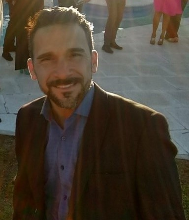

CV de Paulo Palermi
FullStack Web Developer
Over ten years experience in Quality Assurance.

Education
- Renewable Energies Superior Technician
- 2012-2015. Instituto Universitario Spinoza
- First certificate b2
- 1999-2000. Cambridge Exam
Profesional Experience
- Quality Manager - DADA Logistics and Manufacturing
- 2011 - Current
- Quality Assurance - DanteCard
- 2010 - Current
Awards
- Qualitas Award - FCA Group
- 2011, 2012, 2013, 2014.
Other Information
- Herramientas Core Tool
- Herramientas estadisticas
- Herramientas de control de proceso